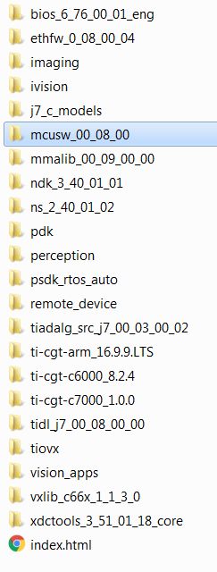

Installation Steps
AM62X/AM62AX/AM62PX
No additional steps required. However, the MCAL configurator would require an additional step. Please refer (Getting access to MCAL) to receive installer for configurator and steps to obtain licese is detailed in (License for Configurator)

Directory structure post installation
Please note that this is an indicative image, actual soc and versions would change
Back To Top
Directory Structure
Post installation of MCUSW, the following directory would be created. Please note that this is an indicative snap-shot. Modules/Drivers could be added/modified.

Top Level Directory Structure
MCAL
MCAL Directory structure, contains MCAL modules, build files. Please note that this is an indicative snap-shot. Modules/Drivers could be added/modified.
Back To Top

MCAL Modules
MCAL Examples
Contains demo applications that demonstrate use of MCAL modules. An integrator could refer these to determine the dependencies of the module.

MCAL Examples
MCAL Examples Configuration
Contains configurations (standalone i.e. configuration for given module and its dependencies, such as Gpt (not dependent on other modules)

MCAL Example Configurations
Back To Top
Build
MCAL employs make based build mechanism. When building on Windows based machine, tool such as gmake could be used.
Setup Build Environment
Following changes are required to be performed in Rules.make to build
- Rules.make can be found at ($SDK_INSTALL_PATH)/mcusw/build, When building on Windows environment ensure to update variables under ifeq (Windows_NT,Windows_NT)
- Build MCAL Examples
- Set BUILD_OS_TYPE = baremetal to build MCAL examples/libraries
- Specify the location of the compiler
- In Rules.make, update SDK_INSTALL_PATH to specify location of the SDK installation.
- One can override compiler path by updating variable TOOLCHAIN_PATH_R5
- Modify Rules.make file as per Soc
- AM62X : By default AM62X_MCU_SDK_VERSION is set to am62x_xx_xx_xx_xx. To use with specific SDK, update AM62X_MCU_SDK_VERSION in Rules.make file.
- AM62AX: By default AM62AX_MCU_SDK_VERSION is set to am62ax_xx_xx_xx_xx. To use with specific SDK, update AM62AX_MCU_SDK_VERSION in Rules.make file.
- AM62PX: By default AM62PX_MCU_SDK_VERSION is set to am62px_xx_xx_xx_xx. To use with specific SDK, update AM62PX_MCU_SDK_VERSION in Rules.make file.
Note: Please refer release note for compatible Mcu_plus_Sdk version.
Build Everything MCAL
With steps listed at (Setup Build Environment) all MCAL modules can be built
AM62X
- Ensure BUILD_OS_TYPE = baremetal
- Go to folder ($SDK_INSTALL_PATH)/mcusw/build
- gmake -s all BOARD=am62x_evm SOC=am62x BUILD_PROFILE=release CORE=mcu0_0 BUILD_OS_TYPE=baremetal
- On Successful compilation, binary folder would be created in ($SDK_INSTALL_PATH)/mcusw/binary/(driver name)_app/bin/am62x_evm/
AM62AX
- Ensure BUILD_OS_TYPE = baremetal
- Go to folder ($SDK_INSTALL_PATH)/mcusw/build
- gmake -s all BOARD=am62ax_evm SOC=am62ax BUILD_PROFILE=release CORE=mcu0_0 BUILD_OS_TYPE=baremetal
- On Successful compilation, binary folder would be created in ($SDK_INSTALL_PATH)/mcusw/binary/(driver name)_app/bin/am62ax_evm/
AM62PX
- Ensure BUILD_OS_TYPE = baremetal
- Go to folder ($SDK_INSTALL_PATH)/mcusw/build
- gmake -s all BOARD=am62px_evm SOC=am62px BUILD_PROFILE=release CORE=mcu0_0 BUILD_OS_TYPE=baremetal
- On Successful compilation, binary folder would be created in ($SDK_INSTALL_PATH)/mcusw/binary/(driver name)_app/bin/am62px_evm/
Other useful commands
- To Clean all examples (all MCAL drivers and their associated examples)
- To Build all examples (all MCAL drivers and their associated examples)
- gmake -s all BOARD=am62x_evm SOC=am62x BUILD_PROFILE=release CORE=mcu0_0 BUILD_OS_TYPE=baremetal
- gmake -s all BOARD=am62ax_evm SOC=am62ax BUILD_PROFILE=release CORE=mcu0_0 BUILD_OS_TYPE=baremetal
- To build specific example (associated MCAL driver will also be built)
- gmake -s can_app BOARD=am62x_evm SOC=am62x BUILD_PROFILE=release CORE=mcu0_0 BUILD_OS_TYPE=baremetal
- gmake -s can_app BOARD=am62ax_evm SOC=am62ax BUILD_PROFILE=release CORE=mcu0_0 BUILD_OS_TYPE=baremetal
- Other examples cdd_ipc_app, dio_app, eth_app, eth_virtmac_app, gpt_app, mcspi_app, wdg_app, mcu_app
- The above list is indicative and examples could be added/deleted
- TO build cdd ipc linux application on AM62X use below command.
- gmake -s cdd_ipc_app_rc_linux BOARD=am62x_evm SOC=am62x BUILD_PROFILE=release CORE=mcu0_0 BUILD_OS_TYPE=baremetal CDD_IPC_LINUX_BUILD=yes
- TO build cdd ipc linux application on AM62AX use below command.
- gmake -s cdd_ipc_app_rc_linux BOARD=am62ax_evm SOC=am62ax BUILD_PROFILE=release CORE=mcu0_0 BUILD_OS_TYPE=baremetal CDD_IPC_LINUX_BUILD=yes
- To determine example name, refer makefile in subdirectory of ($SDK_INSTALL_PATH)/mcusw/mcal/examples/
- gmake -help, will list available target names
Profiles
- Debug : Mostly used to development or debugging
- Release : Recommended to be used for production / profiling performance
Examples Linker File (Select memory location to hold example binary)
The example applications use different memory and this could be changed/re-configured.
- linker_r5.lds defines the memory locations used by the MCAL examples.
- The linker file is specific to a device/core and available at ($SDK_INSTALL_PATH)/mcusw/build/(device family name)/(core name)/linker_r5.lds
- In case of AM62x, ($SDK_INSTALL_PATH)/mcusw/build/am62x/mcu0_0/linker_r5.lds
- In case of AM62Ax, ($SDK_INSTALL_PATH)/mcusw/build/am62ax/mcu0_0/linker_r5.lds
- In case of AM62Px, ($SDK_INSTALL_PATH)/mcusw/build/am62px/mcu0_0/linker_r5.lds
- Used for MCAL example application, that would be hosted on MCU 0 0
- Memory that is used to hold, code, data impacts performance of the driver
- When placed in internal memory (such OCMRAM) best performance is noted
- It's recommended to place ISR code and other frequently used code/data in internal memory
Running Examples
IDE
CCS
Please refer (IDE (CCS)) for CCS and GEL setup
Load Example Binaries
AM62X/AM62AX/AM62PX
Using Linux boot
- Ensure bootmode of the EVM is configured to SD Card bootmode
- Use Balena Etcher application to flash the linux OS on the SD Card using the file tisdk-default-image-am62xx-evm.wic.xz
- Once the SD card is flashed, insert the SD Card to EVM and observe the UART logs to make sure the EVM is booted
Using SBL Bootflow
- In case of AM62X refer AM62X EVM Setup Page for flashing using SBL bootflow
- In case of AM62AX refer AM62AX EVM Setup Page for flashing using SBL bootflow
- In case of AM62PX refer AM62PX EVM Setup Page for flashing using SBL bootflow
AM62X: Steps to Load Example Binaries
- Boot the hardware as mentioned above
- CCS Setup & Steps to run from CCS Refer the SDK Release Notes user guide for generic test setup details and steps to run the examples using CCS.
- Connect to MAIN_Cortex_R5_0_0
- Do CPU Reset and Load binary (driver name)_app_mcu0_0_(release or debug).xer5f
- AM62x MCAL Binaries will be available at ($SDK_INSTALL_PATH)/mcusw/binary/(driver name)_app/bin/am62x_evm/
- Some of the example applications (ipc) would have more than 1 binaries. The name of the binaries specify the core that it's intended to hosted on
- Run example
- Console for demo application logs / messages
NOTE:
- MCAL is validated using SBL bootflow method except Fls and Fls is validated by stopping at U-Boot in Linux Boot.
- All the AM62X MCAL driver supports AM62Q as well except FLS because AM62Q has different flash chip than AM62X.
AM62AX: Steps to Load Example Binaries
- Boot the hardware as mentioned above
- CCS Setup & Steps to run from CCS Refer the SDK Release Notes user guide for generic test setup details and steps to run the examples using CCS.
- Connect to SMS0_TIFS_0
- Disconnect to SMS0_TIFS_0
- Connect to MCU_R5FSS0_0
- Do CPU Reset and Load binary (driver name)_app_mcu0_0_(release or debug).xer5f
- AM62Ax MCAL Binaries will be available at ($SDK_INSTALL_PATH)/mcusw/binary/(driver name)_app/bin/am62ax_evm/
- Some of the example applications (ipc) would have more than 1 binaries. The name of the binaries specify the core that it's intended to hosted on
- Run example
- Console for demo application logs / messages
Back To Top
Compiler Flags used
MCAL Drivers - Profile : Release
| Flag | Description |
| -g | Default behavior. Enables symbolic debugging. The generation of debug information do not impact optimizations. Therefore, generating debug information is enabled by default. |
| -c | Disables linking |
| -qq | Super Quite Mode |
| -pdsw225 | Categorizes the diagnostic identified by num as a warning |
| -march | direct the compiler to target a particular architecture |
| –endian=little | Little Endian |
| -Wall | Enable most warning categories |
| -Wno | Disable the specified warning category. |
| -mv7R5 | Processor Architecture Cortex-R5 |
| -mcpu | Select the target processor version. |
| -mfpu | option to specify which floating-point hardware is available for use by the compiler |
| -mfloat-abi | option in combination with the appropriate -mfpu option depending on what Arm processor variant is in use. |
| –abi=eabi | Application binary interface - ELF |
| -eo.oem4 | Output Object file extension |
| -ea.sem4 | Output assembly file extension |
| –symdebug:dwarf | Generate symbolic debug in DWARF format |
| –embed_inline_assembly | Embed inline assembly in code for optimization |
| –float_support=vfplib | VFP coprocessor is enabled |
| –emit_warnings_as_errors | Treat warning as errors |
| -os | Interlists optimizer comments with assembly statements |
| –optimize_with_debug | Optimize fully in the presence of debug |
| -DBUILD_MCU0_0 | Identifies Core in the domain |
| -DBUILD_MCU | Identifies Domain |
| -Xlinker | Required by TI Arm Clang |
| –diag_suppress | Suppresses the diagnostic identified by num. |
| –ram_model | option tells the linker to initialize variables at load time |
| –reread_libs | option, you can force the linker to reread all libraries |
| -DSOC_AM62X | Device Identifier |
| -DSOC_AM62AX | Device Identifier |
| -DSOC_AM62PX | Device Identifier |
*Note – is actually 2 "-" dashes they simply appear as one long dash in the user Guide.
MCAL Examples - Profile : Release
Same flags that were used for driver (MCAL Drivers - Profile : Release), additional flags listed below

 1.8.6
1.8.6